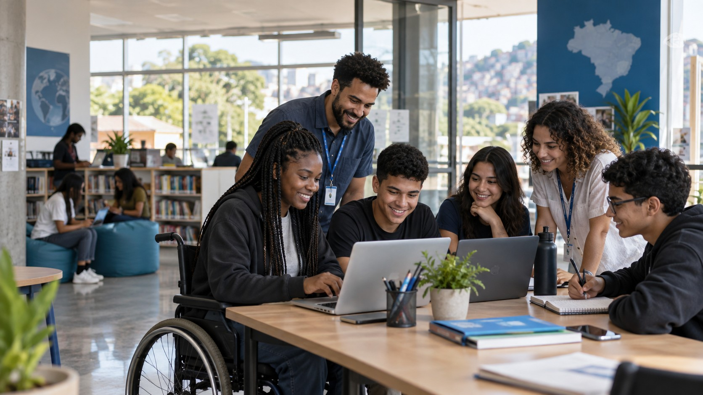
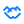
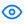
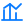

Inclusão
Cada pessoa deve ter acesso às ferramentas para participar do mundo digital.

SOBRE A PONTE DIGITAL
Uma iniciativa acadêmica que imagina caminhos concretos para uma tecnologia mais inclusiva.
DE ONDE VIEMOS
A Ponte Digital é uma ONG fictícia criada para este projeto acadêmico. Ela representa iniciativas de inclusão digital e impacto social que aproximam comunidades do conhecimento e das oportunidades.
Nosso trabalho combina educação, acesso a equipamentos, mentoria e responsabilidade ambiental para mostrar como a tecnologia pode fortalecer pessoas e territórios.
Conheça nossos projetosO QUE NOS GUIA
Cada pessoa deve ter acesso às ferramentas para participar do mundo digital.

Construímos soluções com comunidades, voluntários e parceiros.

Comunicamos objetivos e aprendizados de forma clara e responsável.

Medimos o que fazemos pelo potencial de transformar realidades.
VAMOS CONSTRUIR JUNTOS